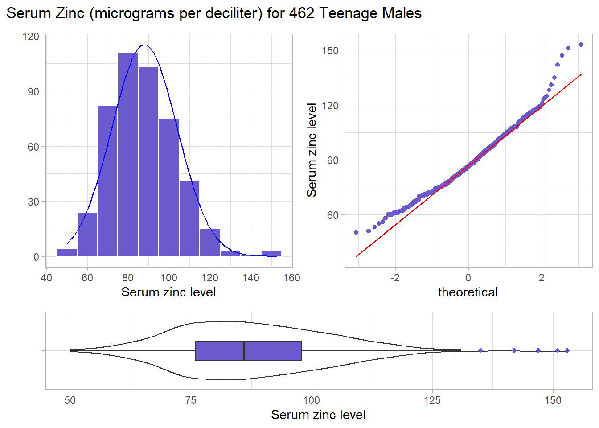

Chapter 16 The Serum Zinc Study
16.1 Serum Zinc Levels in 462 Teenage Males (serzinc)
The serzinc data include serum zinc levels in micrograms per deciliter that have been gathered for a sample of 462 males aged 15-17, My source for these data is Appendix B1 of Pagano and Gauvreau (2000). Serum zinc deficiency has been associated with anemia, loss of strength and endurance, and it is thought that 25% of the world’s population is at risk of zinc deficiency. Such a deficiency can indicate poor nutrition, and can affect growth and vision, for instance. “Typical” values10 are said to be 0.66-1.10 mcg/ml, which is 66 - 110 micrograms per deciliter.
# A tibble: 462 x 2
ID zinc
<chr> <dbl>
1 M-001 142
2 M-002 88
3 M-003 83
4 M-004 100
5 M-005 123
6 M-006 63
7 M-007 102
8 M-008 80
9 M-009 117
10 M-010 86
# ... with 452 more rows16.2 Our Goal: A Confidence Interval for the Population Mean
After we assess the data a bit, and are satisfied that we understand it, our first inferential goal will be to produce a confidence interval for the true (population) mean of males age 15-17 based on this sample, assuming that these 462 males are a random sample from the population of interest, that each serum zinc level is drawn independently from an identical distribution describing that population.
To do this, we will have several different procedures available, including:
- A confidence interval for the population mean based on a t distribution, when we assume that the data are drawn from an approximately Normal distribution, using the sample standard deviation. (Interval corresponding to a t test, and it will be a good choice when the data really are approximately Normally distributed.)
- A resampling approach to generate a bootstrap confidence interval for the population mean, which does not require that we assume either that the population standard deviation is known, nor that the data are drawn from an approximately Normal distribution, but which has some other weaknesses.
- A rank-based procedure called the Wilcoxon signed rank test can also be used to yield a confidence interval statement about the population pseudo-median, a measure of the population distribution’s center (but not the population’s mean).
16.3 Exploratory Data Analysis for Serum Zinc
16.3.1 Graphical Summaries
The code presented below builds:
- a histogram (with Normal model superimposed),
- a boxplot (with median notch) and
- a Normal Q-Q plot (with guiding straight line through the quartiles)
for the zinc results from the serzinc tibble. It does this while making use of several functions contained in the script Love-boost.R.
These functions include:
fd_binsto estimate the Freedman-Diaconis bins setting for the histogramqq_intandqq_slopeto facilitate the drawing of a line on the Normal Q-Q plot
rezinc <- mosaic::favstats(~ zinc, data = serzinc)
bin_w1 <- 10 # specify binwidth
p1 <- ggplot(serzinc, aes(x = zinc)) +
geom_histogram(binwidth = bin_w1,
fill = "slateblue",
col = "white") +
theme_light() +
stat_function(
fun = function(x) dnorm(x, mean = rezinc$mean,
sd = rezinc$sd) *
rezinc$n * bin_w1,
col = "blue") +
labs(x = "Serum zinc level", y = "")
p2 <- ggplot(serzinc, aes(sample = zinc)) +
geom_qq(col = "slateblue") +
geom_qq_line(col = "red") +
theme_light() +
labs(y = "Serum zinc level")
p3 <- ggplot(serzinc, aes(x = "", y = zinc)) +
geom_violin() +
geom_boxplot(width = 0.3, fill = "slateblue",
outlier.color = "slateblue") +
theme_light() +
coord_flip() +
labs(x = "", y = "Serum zinc level")
p1 + p2 - p3 + plot_layout(ncol = 1, height = c(3, 1)) +
plot_annotation(title = "Serum Zinc (micrograms per deciliter) for 462 Teenage Males")
These results include some of the more useful plots and numerical summaries when assessing shape, center and spread. The zinc data in the serzinc data frame appear to be slightly right skewed, with five outlier values on the high end of the scale, in particular.
You could potentially add coord_flip() + to the histogram, and this would have the advantage of getting all three plots oriented in the same direction, but then we (or at least I) lose the ability to tell the direction of skew at a glance from the direction of the histogram.
16.3.2 Numerical Summaries
This section describes some numerical summaries of interest to augment the plots in summarizing the center, spread and shape of the distribution of serum zinc among these 462 teenage males.
The tables below are built using two functions from the Love-boost.R script.
skew1provides the skew1 value for thezincdata andEmp_Ruleprovides the results of applying the68-95-99.7Empirical Rule to thezincdata.
min Q1 median Q3 max mean sd n missing
50 76 86 98 153 87.9 16 462 0[1] 0.121The skew1 value backs up our graphical assessment, that the data are slightly right skewed.
We can also assess how well the 68-95-99.7 Empirical Rule for a Normal distribution holds up for these data. Not too badly, as it turns out.
| count | proportion | |
|---|---|---|
| Mean +/- 1 SD | 323 | 0.6991 |
| Mean +/- 2 SD | 447 | 0.9675 |
| Mean +/- 3 SD | 458 | 0.9913 |
| Entire Data Set | 462 | 1 |
vars n mean sd median trimmed mad min max range skew kurtosis se
X1 1 462 87.9 16 86 87.2 16.3 50 153 103 0.62 0.87 0.74Rounded to two decimal places, the standard deviation of the serum zinc data turns out to be 16, and so the standard error of the mean, shown as se in the psych::describe output, is 16 divided by the square root of the sample size, n = 462. This standard error is about to become quite important to us in building statistical inferences about the mean of the entire population of teenage males based on this sample.
16.4 Inference about a Population Mean from this Sample
The notion of a confidence interval will be important to us, and is explained in further detail in Chapter @ref(#One-Mean). For now, we’ll focus on building a confidence interval for the mean of a population or process.
A confidence interval for a population or process mean uses data from a sample (and perhaps some additional information) to identify a range of potential values for the population mean, which, if certain assumptions hold, can be assumed to provide a reasonable estimate for the true population mean. A confidence interval consists of:
- An interval estimate describing the population parameter of interest (here the population mean), and
- A probability statement, expressed in terms of a confidence level.
Now, let’s identify a 90% confidence interval for the mean of the population zinc levels for teenagers like those sampled in this scenario. Under certain assumptions we’ll discuss later, a reasonable approach uses an intercept-only linear model to estimate the population mean zinc level, both in terms of a point estimate and a confidence interval for a given confidence level.
(Intercept)
87.9 2.5 % 97.5 %
(Intercept) 86.5 89.4Equivalently, we could use the tidy() from the broom package to obtain these results within a tibble for our intercept-only model.
# A tibble: 1 x 7
term estimate std.error statistic p.value conf.low conf.high
<chr> <dbl> <dbl> <dbl> <dbl> <dbl> <dbl>
1 (Intercept) 87.9 0.745 118. 0 86.7 89.2This method is identical to estimating a confidence interval for the population mean using the t.test function in R. Here are those results.
# A tibble: 1 x 8
estimate statistic p.value parameter conf.low conf.high method
<dbl> <dbl> <dbl> <dbl> <dbl> <dbl> <chr>
1 87.9 118. 0 461 86.7 89.2 One S~
# ... with 1 more variable: alternative <chr>In Chapter @ref(#One-Mean), we will discuss the development of this confidence interval, and compare this approach to several alternatives.
16.5 Comparison to “Normal” Zinc Levels
Recall that the “Normal” zinc level would be between 66 and 110. What percentage of the sampled 462 teenagers meet that standard?
There are at least two ways to get what we need.
serzinc %>%
count(zinc > 65 & zinc < 111) %>%
mutate(proportion = n / sum(n), percentage = 100 * n / sum(n))# A tibble: 2 x 4
`zinc > 65 & zinc < 111` n proportion percentage
<lgl> <int> <dbl> <dbl>
1 FALSE 67 0.145 14.5
2 TRUE 395 0.855 85.5Or, we could combine the “explosion pipe” with tabyl to obtain:
zinc > 65 & zinc < 111 n percent
FALSE 67 14.5%
TRUE 395 85.5%16.6 Inference about a Population Proportion from this Sample
Previously, we estimated a confidence interval for the mean of the population zinc levels. Now, we want to estimate a confidence interval for the proportion of the population whose serum zinc levels are in the range of 66 to 110. We’ll discuss this further in Chapter @ref(#One-Proportion), but for now, we’ll just provide a little insight.
As before, we want to build both a point estimate for the population proportion, and a confidence interval for the population proportion.
Now, let’s identify a 90% confidence interval for the proportion of the population whose zinc levels are within the “normal” range. We have seen that 395 / 462 subjects (or a proportion of 0.855) fall in the “normal range” in our sample. For now, that will also be our point estimate of the proportion in the “normal range” across the entire population of teenagers like those in our sample.
serzinc <- serzinc %>%
mutate(in_range = ifelse(zinc > 65 & zinc < 111, 1, 0))
serzinc %>% tabyl(in_range) in_range n percent
0 67 0.145
1 395 0.855Once we’ve created this 0-1 variable, there are several available approaches for wrapping a confidence interval around this proportion.
16.6.1 Using an Intercept-Only Regression Again?
We might consider taking the same approach as we did with the population mean earlier:
model_zincprop <- lm(in_range ~ 1, data = serzinc)
tidy(model_zincprop, conf.int = TRUE, conf = 0.90) %>%
knitr::kable(digits = 3)| term | estimate | std.error | statistic | p.value | conf.low | conf.high |
|---|---|---|---|---|---|---|
| (Intercept) | 0.855 | 0.016 | 52.1 | 0 | 0.828 | 0.882 |
While there are more powerful approaches to estimate a confidence interval around this proportion, this simple approach turns out not to be too bad, so long as the sample proportion isn’t very close to either 0 or 1.
16.6.2 Better Approaches: binom.test and prop.test
Better approaches to estimating a confidence interval for the population proportion use specialized functions such as binom.test or prop.test in R. Here are those results. These approaches want us first to summarize our information into two counts:
- x = number of observations where the event of interest occurs
- n = number of observations, overall
Here, as we’ve seen, we have 395 “events” in 462 “trials”.
in_range n percent
0 67 0.145
1 395 0.855
Total 462 1.000So, our data can be summarized as: x = 395, n = 462.
# A tibble: 1 x 8
estimate statistic p.value parameter conf.low conf.high method
<dbl> <dbl> <dbl> <dbl> <dbl> <dbl> <chr>
1 0.855 395 1.23e-57 462 0.820 0.886 Exact~
# ... with 1 more variable: alternative <chr># A tibble: 1 x 8
estimate statistic p.value parameter conf.low conf.high method
<dbl> <dbl> <dbl> <int> <dbl> <dbl> <chr>
1 0.855 231. 2.88e-52 1 0.819 0.885 1-sam~
# ... with 1 more variable: alternative <chr>In Chapter @ref(#One-Proportion), we will discuss the development of confidence intervals for population proportions, and develop additional alternatives for building inference about proportions, percentages and rates.
References
Pagano, Marcello, and Kimberlee Gauvreau. 2000. Principles of Biostatistics. Second. Duxbury Press.
Reference values for those over the age of 10 years at http://www.mayomedicallaboratories.com/test-catalog/Clinical+and+Interpretive/8620 , visited 2019-09-17.↩